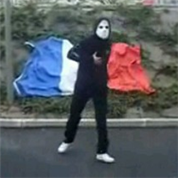
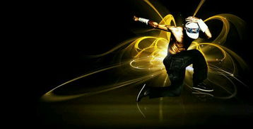
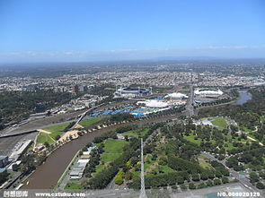

|
| 首页 | AUS风格 | MAS风格 | 硬派风格 | mjn风格 |
| 新手教学 | 高手视频 | 曳舞名人堂 | 舞曲试听 | |
| 会员注册 | 会员登入 | 曳舞文章 | 中国各地QQ群 |
  |
|
| 曳舞风格理解： 风格的不同主要来源于舞者自身的独特习惯和对舞步的理解，各种风格舞步节奏舒缓散漫，音乐相对较轻，但同样不失现场渲染力，各有优点。 |  | |
|  | mjn特点：这种风格模仿最原始的soft aus，减去了那些疯狂的手部动作，把纵向的律动调整到了水平方向，把整体幅度适当减小，形成了这独特的小步风格，舒适美观的mjn。 |  墨尔本市区 |